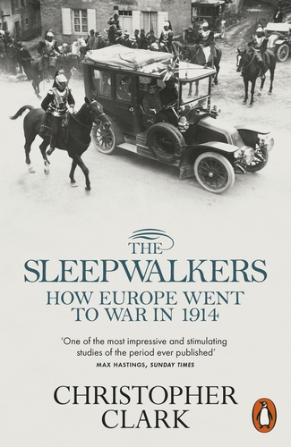
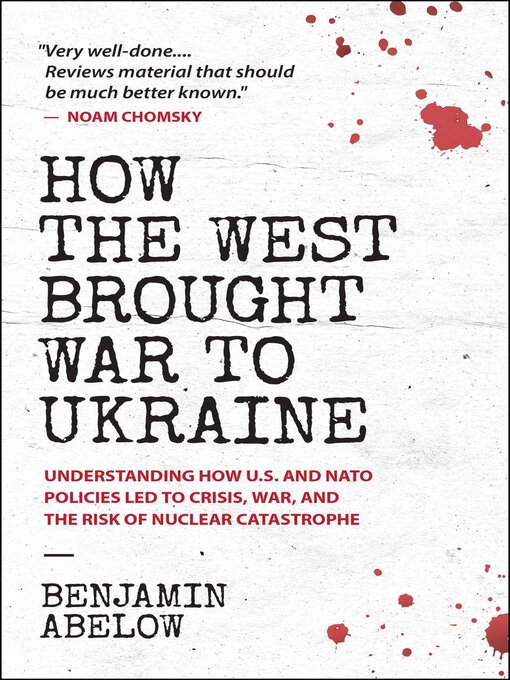
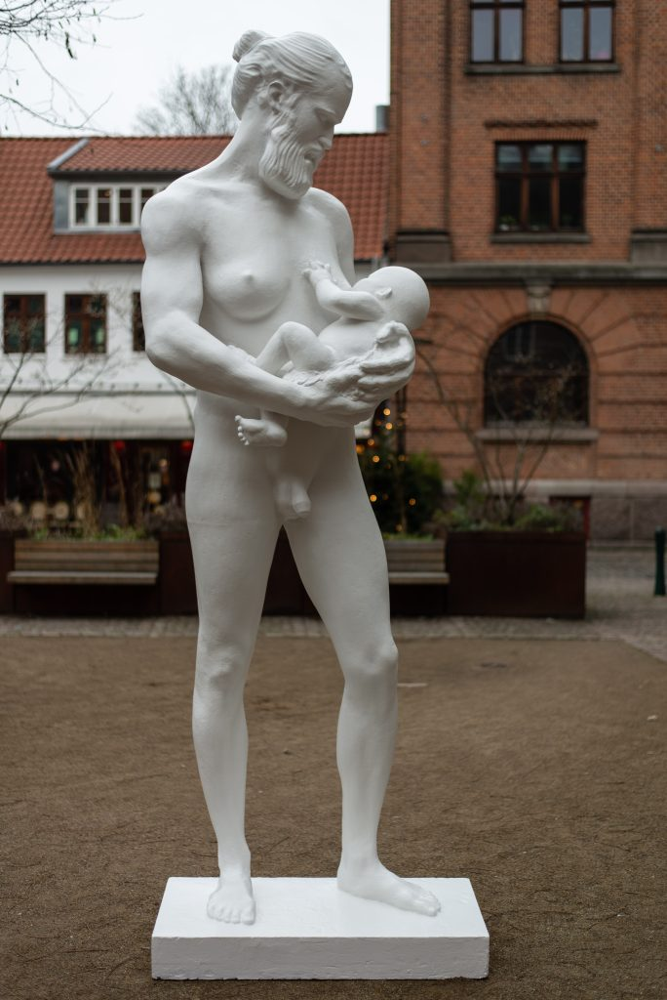
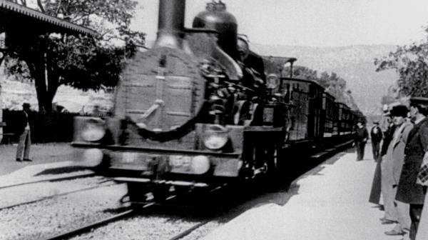
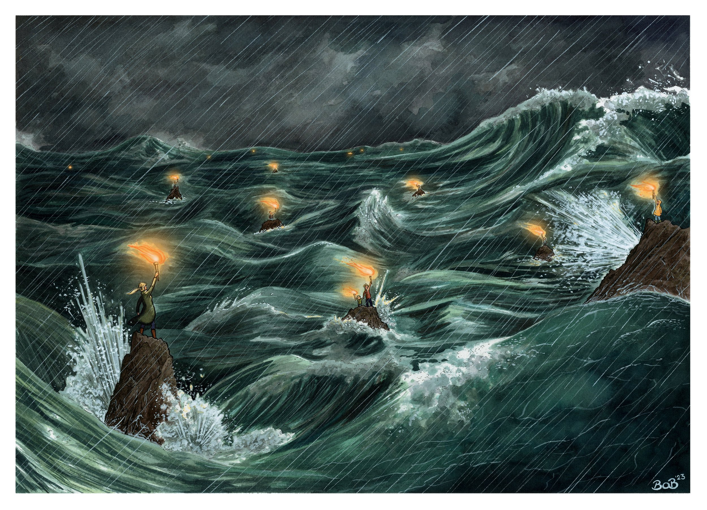
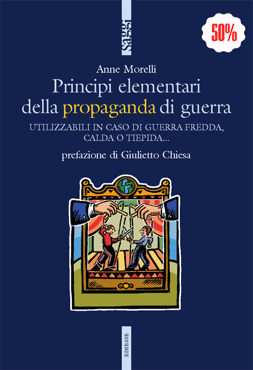
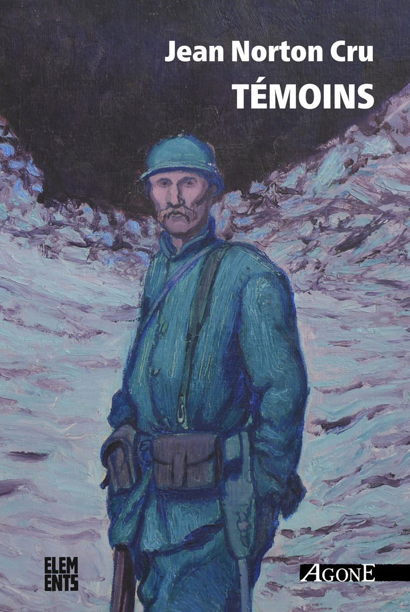
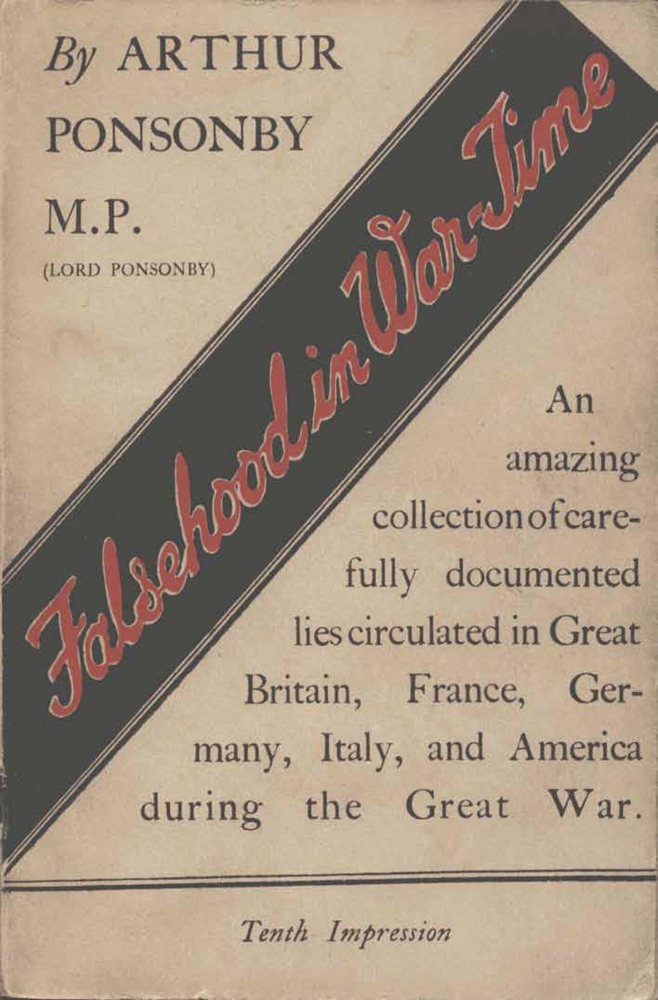

57:33 · 13 OPERE
Contemplare le alternative: il discorso culturale e le sue caratteristiche.
Il filo del discorso
Caldarella propone di distinguere il discorso culturale da una discussione che lascia intatte le proprie regole. Nel secondo caso si può dissentire su singole decisioni senza interrogare la cornice che le rende possibili; nel primo si possono mettere in questione anche gli scopi e i criteri della conversazione. Una partita di calcio offre la analogia: criticare una azione durante il gioco è diverso dal chiedersi perché si giochi e con quali regole. La diagnosi del presente come stagione ostile alla autonomia umana è la tesi del relatore,formulata attraverso ricordi personali e polemiche del periodo pandemico. Il tema delle alternative conduce alla guerra e al rischio nucleare. Il riferimento ai Sonnambuli di Christopher Clark introduce la possibilità di arrivare a una catastrofe attraverso decisioni successive. Il saggio di Benjamin Abelow viene proposto come un modo di ampliare la discussione sulle responsabilità politiche nella guerra inUcraina. Caldarella insiste sulla competenza e sul buon senso,richiama le due Critiche diKant e legge1984 come un avvertimento sul rapporto fra parole e pensiero. La scheda distingue questi argomenti dalle accuse personali e dalle ricostruzioni storiche non dimostrate nel contributo. La riflessione sulle immagini attraversa la scultura di una figura maschile che allatta e il ricordo dei primi film deiLumière. Il relatore difende la libertà della fantasia artistica,ma chiede di conservare una distinzione fra rappresentazione e realtà. La descrizione della scultura trova un riscontro probabile inAGAPE diAske Jonatan Kreilgaard; il senso proposto dall’artista e dal museo non coincide necessariamente con la lettura polemica del video. La storia degli spettatori fuggiti davanti al treno appartiene invece a una leggenda del cinema che non va trattata come un fatto documentato. Beacons diBob Moran offre una immagine positiva: luci separate che consentono di riconoscere la presenza altrui nella tempesta. Tornando adAbelow,Caldarella discute dottrinaMonroe,crisi diCuba,alleanze,basi militari e rapporti fraStati Uniti edEuropa. Invita a superare formule troppo semplici sulla occupazione dell’Italia e a ricostruire i passaggi che collegano fenomeni differenti. Proprio questo metodo richiede di correggere una cronologia del racconto: l’accordo di reclutamento fraGermania eTurchia risale al1961,e non nasce nel1964 sotto la presidenzaJohnson. Il ricordo di un memoriale di un emigrato italiano resta senza titolo identificato con sicurezza. La parte conclusiva propone lo studio della propaganda attraversoAnne Morelli,Arthur Ponsonby eJean Norton Cru. I titoli e i tempi editoriali richiedono alcune distinzioni: Morelli aveva già una edizione italiana nel2005,e il libro diPonsonby uscì nel1928 dopo laGrande Guerra. Il punto filosofico conclusivo è una cultura capace di proseguire la domanda,senza trasformare le proprie risposte in una parola definitiva. Il video termina con esempi di retorica politica e una immagine comica diTotò: il rifiuto di obbedire senza pensare viene affidato anche alla possibilità di ridere del potere.
I libri nel discorso

The Sleepwalkers. How Europe Went to War in 1914
Copertina: Copertina ufficiale Penguin2013,ISBN9780141027821: fotografia storica di una carrozza e titolo verde su fondo chiaro. Titolo,sottotitolo e Christopher Clark leggibili; non si attribuisce questa edizione al video.
Immagine autentica dell’opera, controllata visivamente; l’edizione di riferimento non è attribuita al filmato.
The Sleepwalkers e argomentoPrima Guerra Mondiale espliciti; identificato il libro diChristopher Clark.
Passaggio 13:03 ↗ · Fonti e libro ↗
How the West Brought War to Ukraine. Understanding How U.S. and NATO Policies Led to Crisis,War,and the Risk of Nuclear Catastrophe
Copertina: Copertina inglese dell’ebook Siland Press2022,ISBN9780991076710,dal catalogo bibliotecario OverDrive: fondo bianco,lettere nere e rosse,gocce rosse. Non è una traduzione tedesca né una immagine con bandiere aggiunta da un rivenditore.
Immagine autentica dell’opera, controllata visivamente; l’edizione di riferimento non è attribuita al filmato.
Benjamin Abelow e How the West Brought War to Ukraine espliciti.
Passaggio 15:36 ↗ · Fonti e libro ↗
La Repubblica
Identificazione probabile
Copertina: Laterza · La Repubblica · edizione con testo a fronte di riferimento
Immagine associata all’ISBN di riferimento e controllata visivamente; edizione e traduzione non identificate come quelle citate o lette nel video.
Il timoniere competente e la nave richiamano probabilmenteRepubblicaVI488a–489a; titolo non pronunciato.
Passaggio 17:07 ↗ · Fonti e libro ↗
Critica della ragion pratica
Copertina: Bompiani, 2000
Critica della ragion pratica diKant esplicita accanto alla primaCritica.
Passaggio 21:10 ↗ · Fonti e libro ↗
Critica della ragione pura
Copertina: Adelphi · Gli Adelphi 85, 1995 · traduzione e cura Giorgio Colli
Immagine autentica dell’opera, controllata visivamente; l’edizione di riferimento non è attribuita al filmato.
Critica della ragion pura esplicita e successivo richiamo alMutterwitz.
Passaggio 21:10 ↗ · Fonti e libro ↗
1984
Copertina: Newton Compton · edizione illustrativa
Eric Blair/George Orwell e1984 espliciti nella riflessione su lingua e pensiero.
Passaggio 22:39 ↗ · Fonti e libro ↗
AGAPE
Identificazione probabile
AGAPE · fotografia dal sito dell’artista: Fotografia ufficiale dell’opera intera dal sito dell’artista: figura bianca in piedi con neonato,su un basamento all’aperto. È una riproduzione di scultura,non una copertina libraria o una fotografia documentaria di un allattamento reale.
Immagine autentica dell’opera, controllata visivamente; l’edizione di riferimento non è attribuita al filmato.
Scultura danese di figura maschile allattante in un museo del genere: probabileAGAPE,autore e titolo non pronunciati.
Passaggio 24:52 ↗ · Fonti e libro ↗
L’Arrivée d’un train en gare de La Ciotat
Identificazione probabile
L’Arrivée d’un train · fotogramma dal BFI: Fotogramma autentico riprodotto dalBFI: locomotiva in avvicinamento sulla sinistra e persone sulla banchina. Non è una locandina o una copertina; scartata la immagine generale della pagina,che mostrava Brief Encounter1945.
Immagine autentica dell’opera, controllata visivamente; l’edizione di riferimento non è attribuita al filmato.
I fratelliLumière e il treno che spaventa il pubblico: probabileL’Arrivée d’un train en gare deLa Ciotat,titolo non detto.
Passaggio 29:04 ↗ · Fonti e libro ↗
Beacons
Identificazione probabile
Beacons · riproduzione ufficiale dell’acquerello: Riproduzione ufficiale completa dell’originale a china e acquerello,firmatoBob 23: figure con torce sugli scogli,onde scure e pioggia. Non è lo schizzo a matita e non è una copertina di un libro di Moran.
Immagine autentica dell’opera, controllata visivamente; l’edizione di riferimento non è attribuita al filmato.
Bob Moran esplicito; descrizione delle torce sugli scogli nella tempesta corrisponde aBeacons,titolo non pronunciato.
Passaggio 35:22 ↗ · Fonti e libro ↗
Pentagon Papers (Report of the Office of the Secretary of Defense Vietnam Task Force)
Prima pagina del fascicolo introduttivo e indice: Rapporto finale del 1969 · fascicolo introduttivo e indice · scansione NARA declassificata nel 2011
Prima pagina del fascicolo introduttivo e indice conservato dai National Archives; non è la copertina di un libro e non riproduce l’intero rapporto. La voce riguarda il corpus documentario.
PentagonPapers eDanielEllsberg espliciti; riuso della voce esistente.
Passaggio 45:06 ↗ · Fonti e libro ↗
Principi elementari della propaganda di guerra. Utilizzabili in caso di guerra fredda,calda o tiepida…
Copertina: Copertina autentica Ediesse dell’edizione italiana2005,ISBN8823006007,dal catalogo dell’editore: fondo blu,teatrino di marionette,prefazione di Giulietto Chiesa. La immagine editoriale comprende un bollino promozionale50%; non rappresenta una indicazione di prezzo del sito.
Immagine autentica dell’opera, controllata visivamente; l’edizione di riferimento non è attribuita al filmato.
Anne Morelli e titoloPrincipes élémentaires de propagande de guerre espliciti; traduzione italiana riscontrata2005.
Passaggio 49:57 ↗ · Fonti e libro ↗
Témoins. Essai d’analyse et de critique des souvenirs de combattants édités en français de1915 à1928
Identificazione probabile
Copertina: Copertina ufficiale Agone,Éléments,8aprile2022,ISBN9782748904420,con prefazione di Philippe Olivera: soldato in trincea,titolo e autore in bianco. Non è il facsimilePUN2006 o Du témoignage.
Immagine autentica dell’opera, controllata visivamente; l’edizione di riferimento non è attribuita al filmato.
Jean Norton Cru nominato come antecedente diMorelli; probabileTémoins1929,senza titolo pronunciato.
Passaggio 51:49 ↗ · Fonti e libro ↗
Falsehood in War-Time. Containing an Assortment of Lies Circulated Throughout the Nations During the Great War
Copertina: Riproduzione autentica della copertina della decima impressioneAllen & Unwin1940: fascia diagonale nera,titolo rosso e dicituraTenth Impression. L’opera originale è del1928; non si presenta la ristampa1940 come prima edizione.
Immagine autentica dell’opera, controllata visivamente; l’edizione di riferimento non è attribuita al filmato.
Arthur Ponsonby eFalsehood in War-Time espliciti; prima edizione1928,successiva al conflitto.
Passaggio 52:08 ↗ · Fonti e libro ↗Minutaggi ricavati da testi automatici, da riascoltare. Le identificazioni probabili sono segnalate accanto ai libri.